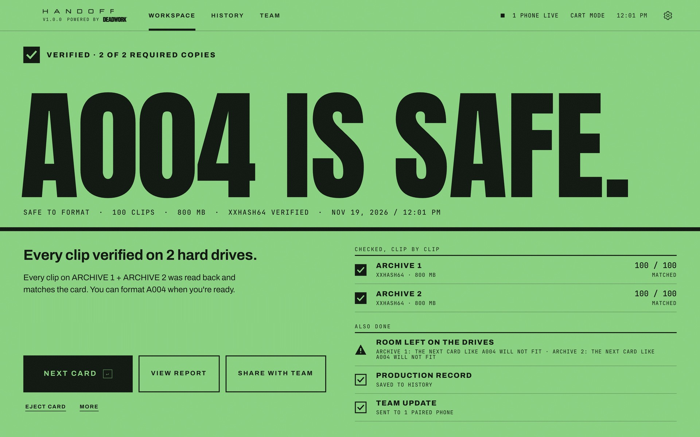

Lock the card or mount it read-only, so nothing can write to it.
Copy it to at least two separate physical drives.
Read every file back from every drive and compare it to the card.
Keep a record: what was copied, where, when, and whether it matched.
Format only when every file matched on every copy you need.
Handoff does steps 2 to 5 for you on a Mac and turns green only when the card is safe to format.
A finished copy isn't a checked copy.
Most lost footage isn't lost on the card. It's lost after someone formats the card, trusting a copy that never fully arrived. A cable came loose, a drive filled up, the laptop slept, or one file came across damaged. The copy bar still said it finished.
The fix isn't a faster copy. It's checking the copy before the card goes back in the camera, every time, even at the end of a long day.
Step 1: decide how many copies.
Agree on the rule before the shoot, so nobody decides at wrap when they're tired.
Two copies is the floor. Two separate physical drives, not two folders on one drive.
Three is common on paid work. The third copy leaves the location, so one bad night can't take everything.
Label the drives. Shuttle, master, backup. Everyone should know which drive is which without asking.
Step 2: copy and check, by hand.
Protect the card. Flip the lock tab if it has one, or mount it read-only.
Copy the whole card. Keep the full folder structure. Cameras and editing software expect it.
Copy to each drive. Then compare file counts and total size against the card.
Check each file. Calculate a checksum on the card and on each copy, and compare them.
Write it down. Card name, drives, time, and whether every file matched.
Comparing file counts and sizes catches a missing file. It won't catch a damaged one. Only reading each file back and comparing checksums does that.
What checksums and MHL files do.
A checksum is a fingerprint of a file's contents. Change one byte and the fingerprint changes. Offload tools calculate it on the card, then again on each copy, and compare. xxHash is a common choice on set because it's built for speed.
An MHL (Media Hash List) is a file saved with the footage that lists every file and its checksum. Post can run it to check that what arrived is exactly what left set. ASC MHL is the current open standard, developed by the American Society of Cinematographers' Motion Imaging Technology Council.
Format a card only when every file on it has been read back and matched on every copy your rule asks for. Anything less means keep the card:
One copy is verified, the second isn't. Not safe yet. Finish the second copy.
A copy failed. Find which drive and which files, and copy those again.
The copy stopped halfway. Power, sleep or a pulled cable. Resume and check again.
Nobody's sure. Then it isn't verified. Keep the card until someone is.
The Handoff way.
Handoff is our Mac app for exactly this job. Put in a card, pick the drives, start.

Green: every clip read back and matched on 2 hard drives. Sample card.
It copies to every drive. Card to drives, drive to drive, or a transfer to an editor or post house.
It checks every file. Each file is read back from each drive and matched to the card with xxHash64.
It gives one answer. Green means safe to format. Amber means a copy short. Red names the drive and the clips that failed. Grey means the copy was interrupted and can resume.
It counts real copies. Two folders on the same physical disk count once. Your rule can be 1 to 5 copies.
It keeps the record. A PDF custody report, MHL files (legacy and ASC MHL) and a CSV on every drive, plus a searchable History.
A gap in the clip numbers is flagged before the copy starts.
The team's phones can follow along too. The free iPhone app shows live progress and alerts each person when a card turns green or red. Phones only watch, so nobody can change a copy from one.
Handoff isn't out yet. It launches with 14 days free and no card needed.
Handoff handles the copying and checking. A few things stay with you.
You choose the drives. Separate physical drives, with room for the card.
You set the rule. Two copies unless your production asks for more.
You format the card. Handoff tells you when it's safe. It never formats for you.
The guesswork goes. Green means checked, so nobody has to open folders at wrap to be sure.
When by hand still makes sense.
You shoot one card a week and have time to check it yourself.
You already use a checksum tool you trust and keep your own records.
Once it's several cards a day, a tired team and a producer asking if it's safe, checking by hand is where mistakes get in. That's the part worth handing to software.